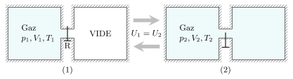
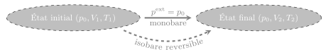
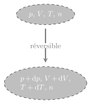
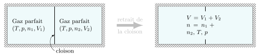

Le premier principe, en tant que principe de conservation de l’énergie, impose certaines
contraintes sur les transformations.

Expérience de Joule-Gay-Lussac.
Par exemple, dans l’expérience de Joule Gay-Lussac, la détente du gaz est telle que \(U_1=
U_2\). Toutefois, la transformation \((2) \to (1)\) ne viole pas le premier principe et
n’est pourtant jamais observé.
De la même façon, on observe couramment un pendule osciller tout en s’amortissant en
réchauffant l’air (par dissipation). Le phénomène inverse, c’est-à-dire la mise en
oscillation spontanée d’un pendule qui puiserait l’énergie à l’extérieur (ce qui
refroidirait l’air) n’est jamais observé alors que le premier principe ne serait pas violé.
Ainsi, le premier principe est un critère nécessaire mais non suffisant pour décrire ce qui
est réellement observé. Il nous manque un principe d’évolution. C’est précisément le rôle
que remplit le second principe.
Énoncé du second principe
Il existe de nombreux énoncés équivalents entre eux. On doit le premier énoncé à Sadi Carnot
en 1824 dans le cadre de l’étude des machines à vapeur. En 1850, le physicien allemand
Rudolf Clausius donnera un énoncé relatif aux transferts thermiques. Peu après, c’est
William Thomson (Lord Kelvin) qui donnera un énoncé général sur les machines thermiques
cycliques.
On adopte ici l’énoncé donné vers 1950 par Ilya Prigogine.
Second Principe :
À tout système thermodynamique est associée une fonction d’état appelée
entropie et notée \(S\), telle que :
L’entropie est additive, extensive mais non conservative.
Lors d’une transformation entre deux états d’équilibre, l’entropie varie de :
$$
\quad \boxed{ \Delta S = S_\text{échangée} + S_\text{créée} \quad /
\quad \begin{cases} \begin{aligned}
S_\text{échangée} &= \int \frac{\delta Q}{T^\text{ext}} \\
S_\text{créée} &\ge 0
\end{aligned}
\end{cases} }
$$
L’entropie créée d’une transformation réversible est nulle. Elle est strictement positive
pour une transformation irréversible.
Le terme d’échange \(\int \frac{\delta Q}{T^\text{ext}}\) est positif si le système reçoit
de l’énergie thermique, et négatif dans le cas contraire. \(T^\text{ext}\) est la
température du milieu extérieur à l’endroit de la paroi et au moment où a lieu l’échange
thermique \(\delta Q\). Le symbole \(\int\) signifie qu’on intègre non seulement sur
l’étendue de la paroi mais aussi tout au long de la transformation.
Concernant l’entropie créée, elle ne peut pas être négative. C’est précisément cette
contrainte qui sépare les transformations impossibles des transformations possibles, le cas
\(S_\text{créée} = 0\) étant une limite correspondant aux phénomènes réversibles.
Conséquences
Évolution d’un système isolé
Si un système n’échange rien avec l’extérieur alors \(Q=0\) et \(\Delta S \ge 0\).
L’entropie croît jusqu’a se stabiliser à une valeur maximale lorsque l’équilibre est
atteint. Pour faire une analogie avec la mécanique, on pourrait dire que \(-S\) joue le rôle
d’un potentiel thermodynamique qui présente un minimum à l’équilibre thermodynamique.
Définition générale de la température
L’entropie étant une fonction d’état, \(\Delta S\) est indépendant de la transformation, et
son calcul peut s’effectuer en choisissant un chemin réversible. Imaginons donc deux états
d’équilibres successifs le long d’un processus réversible. On a :
$$
\quad \mathrm{d}U = \delta Q^\text{rev} - p\mathrm{d}V + Y\mathrm{d}X
$$
et
$$
\quad \mathrm{d}S = \frac{\delta Q^\text{rev}}{T}
$$
où \(Y\mathrm{d}X\) désigne les travaux autres que celui des forces pressantes (électriques,
chimiques, magnétiques, etc.).
Il en découle :
$$
\quad \mathrm{d}S(U,V,X) = \frac{1}{T} \mathrm{d}U + \frac{p}{T} \mathrm{d}V
- \frac{Y}{T} \mathrm{d}X
$$
Or, si l’on connait la fonction entropie d’un système en fonction des variables \((U,V,X)\),
on peut aussi écrire :
$$
\quad \mathrm{d}S(U,V,X) =
\left. \frac{\partial S}{\partial U} \right|_{V,X} \mathrm{d}U
+ \left. \frac{\partial S}{\partial V} \right|_{U,X} \mathrm{d}V
+ \left. \frac{\partial S}{\partial X} \right|_{U,V} \mathrm{d}X
$$
et par identification on obtient une définition générale de la température :
$$
\quad \frac{1}{T} = \left. \frac{\partial S}{\partial U} \right|_{V,X}
$$
Si l’on sait comment l’entropie varie avec l’énergie interne d’un système, son volume et les
autres variables extensives pertinentes (notées \(X\)), on peut calculer la température du
système. Autrement dit la température est une propriété intrinsèque du système.
Énoncé de Clausius
Considérons deux systèmes (1) et (2) en contact thermique, l’ensemble étant isolé. Notons
\(S\) et \(U\) l’entropie et l’énergie interne de l’ensemble. Les fonctions \(S\) et \(U\)
étant additives, on peut écrire :
$$
\quad U = U_1 + U_2 = \rm{C^{te}}
$$
et$$
\quad S = S_1 + S_2
$$
Si l’on choisit comme variables d’état \(U\), \(V\) et \(X\), on peut écrire :
$$
\quad S = S_1(U_1,V_1,X_1) + S_2(U_2,V_2,X_2)
$$
Supposons que (1) gagne de l’énergie et que (2) en perde, les autres variables restant
constantes. Il s’agit d’un transfert thermique. Lors de ce transfert, l’entropie du système
isolé ne peut pas décroître en vertu du second principe :
$$
\quad \mathrm{d}S =
\left. \frac{\partial S_1}{\partial U_1} \right|_{V_1,X_1} \mathrm{d}U_1
+ \left. \frac{\partial S_2}{\partial U_2} \right|_{V_2,X_2} \mathrm{d}U_2 \ge 0
$$
avec
$$
\quad \mathrm{d}U_2 = - \mathrm{d}U_1
$$
c’est-à-dire, en utilisant la définition de la température :
$$
\quad \mathrm{d}S = \mathrm{d}U_1 \left( \frac{1}{T_1} - \frac{1}{T_2} \right) \ge 0
$$
Par conséquent :
si \(T_1 = T_2\) alors \(\mathrm{d}S =0\) et le système est à l’équilibre
si \(T_1 \gt T_2\) alors \(\mathrm{d}U_1 \lt 0\) et le système (1) perd de
l’énergie
si \(T_1 \lt T_2\) alors \(\mathrm{d}U_1 \gt 0\) et le système (1) gagne de
l’énergie
Ce que l’on peut résumer par l’énoncé suivant :
Enoncé de Clausius (1850) :
Tout transfert thermique s’établit spontanément des zones chaudes vers les zones froides.
Bilans d’entropie
Méthodologie
On calcule la variation d’entropie en imaginant un chemin réversible compatible avec l’état
initial et l’état final. Entre deux états d’équilibre voisins au cours de la transformation,
on peut écrire :
$$
\quad \mathrm{d}S = \frac{\delta Q^\text{rev}}{T}
$$
et
$$
\quad \Delta S = \int_\text{rev} \mathrm{d}S
$$
Notons qu’en thermodynamique classique l’entropie n’est déterminée qu’à une constante près,
puisque seules ses variations sont accessibles par le calcul. La physique statistique lèvera
cette indétermination en donnant une interprétation statistique de l’entropie.
Pour déterminer, l’entropie créée par la transformation réelle \(\mathcal{T}\) il suffit
d’appliquer le second principe en écrivant :
$$
\quad S_\text{créée} = \Delta S - \int_\mathcal{T} \frac{\delta Q}{T^\text{ext}}
$$
Illustrons sur quelques exemples, différents calculs d’entropie.
Transformation monobare d’un corps monophasé
Prenons un corps monophasé de masse \(m\) décrit par les variables \(p\), \(V\) et \(T\).
Chauffons ce corps en le soumettant à une pression extérieure constante \(p^\text{ext}=
p_0\).

Évolution monobare d’un corps décrit par les variables \(p\), \(V\) et
\(T\).
Effectuons un bilan d’énergie et d’entropie entre deux équilibres successifs le long d’un
chemin réversible fictif isobare :
$$
\quad \mathrm{d}U = \delta Q^\text{rev} - p\mathrm{d}V
$$
et
$$
\quad \mathrm{d}S = \frac{\delta Q^\text{rev}}{T} + 0
$$
On peut exprimer le transfert thermique en fonction de la capacité thermique
isobare : \(\delta Q^\text{rev} = m c_p \mathrm{d}T\). On en déduit :
$$
\quad \boxed{ \Delta S = \int_{T_1}^{T_2} m c_p \frac{\mathrm{d}T}{T}
\quad \xrightarrow[c_p = \rm{C^{te}}]{} \quad
m c_p \ln \left( \frac{T_2}{T_1} \right)
}
$$
Ainsi l’entropie augmente si la température augmente, elle diminue dans le cas inverse.
Application à la calorimétrie
Mélangeons 100 g d’eau à 20 °C avec 100 g d’eau à 40 °C dans un
calorimètre supposé parfaitement adiabatique et sans capacité thermique pour simplifier. Le
mélange subit une évolution adiabatique monobare. Faisons un bilan d’énergie sur le système
constitué par le calorimètre et son contenant :
$$
\quad Q_p = 0 = \Delta H = \Delta H_1 + \Delta H_2 = m c_p(T_f - T_1) + mc_p(T_f - T_2)
$$
On en déduit la température d’équilibre \(T_f = \frac{1}{2}(T_1+T_2) = 30\,\rm{°C}\).
Calculons maintenant la variation d’entropie du système lors de cette
transformation :
$$
\quad \Delta S = \Delta S_1 + \Delta S_2 = m c_p\ln \left( \frac{{T_f}^2}{T_1T_2} \right)
$$
En vertu du second principe :
$$
\quad \Delta S = \underbrace{S_\text{échangée}}_{=0} + S_\text{créée}
= m c_p\ln \left( \frac{{T_f}^2}{T_1T_2} \right) \gt 0
$$
car \({T_f}^2 \gt T_1T_2\).
Cette transformation crée de l’entropie ; elle donc irréversible. L’opération inverse
est impossible.
Un thermostat (on dit aussi source de chaleur) est un système fermé qui ne peut échanger que
de l’énergie thermique sans que sa température \(T_0\) varie. En pratique, il s’agit d’un
système de très grande capacité thermique comparé au système avec lequel il échange de
l’énergie.
Par exemple, pour les poissons qui s’y trouvent, un lac peut être considéré comme un
thermostat sur une durée suffisamment courte.
Appelons \(S_0\) l’entropie du thermostat et \(U_0\) son énergie interne. On a :
$$
\quad \mathrm{d}S_0 = \frac{1}{T_0} \mathrm{d}U_0
$$
Vu que sa température est fixée, on obtient après intégration la relation \(\Delta S_0 =
\Delta U_0/T_0\).
Le thermostat ne peut échanger que de l’énergie thermique ce qui explique l’absence des
travaux dans l’écriture des premier et second principes.
Supposons qu’un système \((S)\) est mis en contact avec ce thermostat et qu’il reçoit le
transfert thermique \(Q\). Le premier principe impose alors \(\Delta U_0 = -Q\). Ainsi, le
thermostat voit son entropie varier de :
$$
\quad \boxed{ \Delta S_0 = - \frac{Q}{T_0} }
$$
Quant au système \((S)\), son entropie varie de :
$$
\quad \Delta S_0 = \int \frac{\delta Q}{T^\text{ext}} + S_\text{créée}
= \frac{Q}{T_0} + S_\text{créée} \gt \frac{Q}{T_0}
$$
Entropie d’un gaz parfait
Calculons l’entropie d’un gaz parfait en imaginant une transformation réversible
infinitésimale \(\mathcal{T}\) faisant évoluer les variables d’état \((p,V,T)\) à
\((p+\mathrm{d}p,V+\mathrm{d}V,T+\mathrm{d}T)\), la quantité de matière restant fixe.
Choisissons la température \(T\) et le volume molaire \(V_m\) comme variables intensives
indépendantes. Ainsi, l’entropie molaire du gaz parfait doit pouvoir s’exprimer en fonction
de \(T\) et \(V_m\) : \(S_m(T,V_m)\). Déterminons cette fonction en appliquant le
premier et le second principe à une mole de gaz parfait évoluant de manière
réversible :
$$
\quad \begin{cases}
\text{Premier principe :} \quad \mathrm{d}U_m = \delta Q^\text{rev} - p\mathrm{d}V_m \\
\text{Second principe :} \quad \mathrm{d}S_m = \frac{\delta Q^\text{rev}}{T}
\end{cases}
$$
avec \(pV_m = RT\).
On en déduit :
$$
\quad \mathrm{d}S_m = \frac{\mathrm{d}U_m}{T} + R\frac{\mathrm{d}V_m}{V_m}
$$

Transformation infinitésimale réversible.
Par ailleurs, pour un gaz parfait, l’énergie interne ne dépend que de la température et sa
variation s’écrit :
$$
\quad \mathrm{d}U_m = C_{v,m}\mathrm{d}T = \frac{R}{\gamma - 1}\mathrm{d}T
$$
Finalement, on aboutit au résultat :
$$
\quad \mathrm{d}S_m(T,V_m) = \frac{R}{\gamma - 1}\frac{\mathrm{d}T}{T}
+ R \frac{\mathrm{d}V_m}{V_m}
$$
Faisons l’hypothèse que le gaz parfait présente un facteur \(\gamma\) constant. Dans ce cas,
il est possible d’intégrer la relation précédente. On obtient le résultat suivant :
$$
\quad S_m = R \left( \frac{1}{\gamma - 1}\ln T + \ln V_m + \rm{C^{te}} \right)
$$
L’entropie molaire dépend bien de \(T\) et \(V_m\) et contient une indétermination via la
constante d’intégration.
L’entropie s’obtient en multipliant l’entropie molaire par le nombre de moles.
$$
\quad \boxed{ S(T,V,n) = S_0 + nR\left(
\frac{1}{\gamma - 1} \ln \left( \frac{T}{T_0} \right)
+ \ln \left( \frac{V}{V_0} \right)
\right) }
$$
où \(S_0\) est l’entropie du gaz parfait à la température \(T_0\) pour un volume \(V_0\).
Voyons quelles conséquences on peut tirer de cette formule.
Détente de Joule Gay-Lussac
Nous avons vu qu’un gaz parfait se détend dans le vide sans changer de température. Cette
transformation adiabatique produit, d’après la relation précédente, une quantité
d’entropie :
$$
\quad S_\text{créée} = \Delta S = S(T,V_2,n) - S(T,V_1,n)
= nR \ln \left( \frac{V_2}{V_1} \right)
$$
Ainsi, si \(V_2 \gt V_1\) la détente est irréversible. En revanche, le gaz ne peut pas créer
spontanément du vide, car \(V_2 \lt V_1\) implique \( S_\text{créée} \lt 0\).
Détente adiabatique réversible
Lorsqu’un gaz parfait n’échange aucune énergie thermique avec l’extérieur, il n’échange pas
d’entropie non plus. De surcroît, si l’opération est réversible, il ne créé pas d’entropie.
Ainsi une transformation adiabatique réversible conserve l’entropie.
En écrivant cette loi de conservation, on trouve :
$$
\frac{1}{\gamma - 1} \ln\left(\frac{T_1}{T_0}\right) + \ln\left(\frac{V_1}{V_0}\right)
=\frac{1}{\gamma - 1} \ln\left(\frac{T_2}{T_0} \right) + \ln\left(\frac{V_2}{V_0} \right)
$$
Ce qui aboutit à la relation :
$$
\quad T_1{V_1}^{\gamma - 1} = T_2{V_2}^{\gamma - 1}
$$
On retrouve une des lois de Laplace.
Mélange de gaz parfaits
Considérons le mélange de deux gaz parfaits différents, notés (1) et (2), et initialement
dans les mêmes conditions de pression et de température. Pour cela, enfermons dans une
enceinte adiabatique deux gaz parfaits séparés par une cloison.

Mélange de deux gaz parfaits.
Retirons la cloison et attendons l’équilibre thermodynamique. Lors de cette transformation,
la température et la pression ne varient pas. En effet, si l’on raisonne sur le système
formé par les deux gaz, celui-ci ne reçoit ni transfert thermique ni travail, de sorte que
l’énergie interne reste constante :
$$
\Delta U = \int_T^{T_f} C_{v,1} \mathrm{d}T + \int_T^{T_f} C_{v,2} \mathrm{d}T = 0
$$
On en déduit que la température ne varie pas : \(T_f = T\).
C’est également le cas de la pression, du fait de la conservation de la matière :
$$
\quad n = n_1 + n_2 \quad \Rightarrow \quad
\frac{p_f(V_1 + V_2)}{RT} = \frac{pV_1}{RT} + \frac{pV_2}{RT}
$$
Dans ce processus, l’ouverture de la cloison relâche une contrainte interne et permet
l’équilibre chimique. Cette relaxation produit de l’entropie que l’on appelle entropie de
mélange. Exprimons la variation d’entropie du système :
$$
\quad \Delta S = \Delta S_1 + \Delta S_2 =
n_1 R \ln \left(\frac{V_1+V_2}{V_1} \right)
+ n_2 R \ln \left(\frac{V_1+V_2}{V_2} \right)
$$
Pour un gaz parfait, on a :
$$
\quad \frac{V_1+V_2}{V_1} = \frac{n_1+n_2}{n_1} = \frac{1}{x_1}
$$
et de même :
$$
\quad \frac{V_1+V_2}{V_2} = \frac{1}{x_2}
$$
On aboutit au résultat \(\Delta S = -(n_1 R \ln x_1 + n_2 R \ln x_2) \). Comme les fractions
molaires \(x_1\) et \(x_2\) sont comprises entre 0 et 1, la variation d’entropie est
nécessairement positive. Le mélange est un phénomène irréversible.
Mélange de deux gaz :
Le mélange de deux gaz parfaits est un processus irréversible. Les gaz parfaits sont
miscibles en toute proportion.